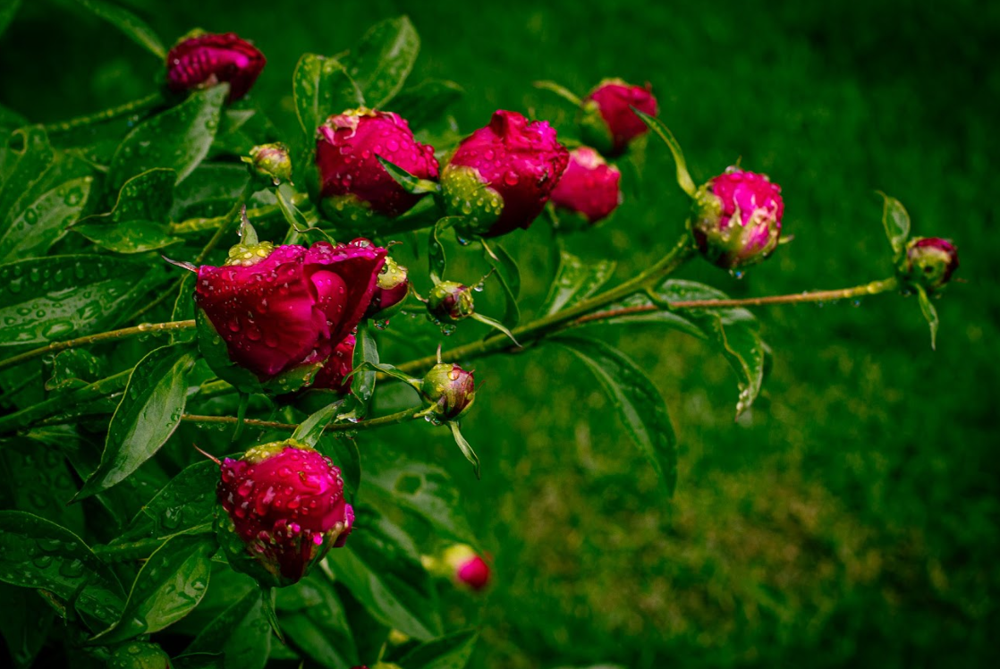
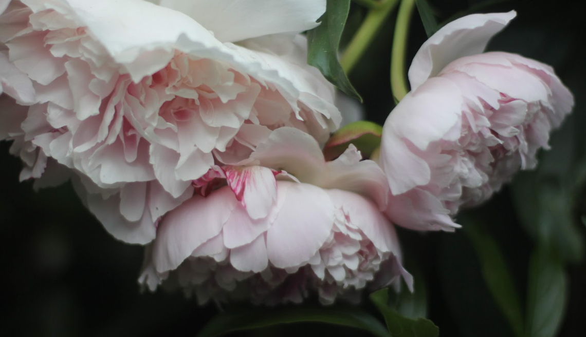
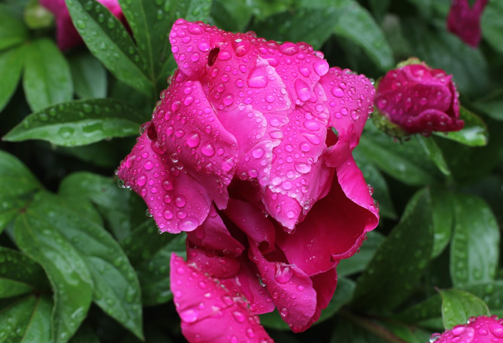

Peonies in Landscape Design & Floral Arrangements
Peonies are more than just stunning flowers—they are versatile garden staples that bring structure, color, and elegance to any landscape. Whether used in formal designs or naturalistic settings, their lush foliage and showy blooms make them an ideal choice for creating focal points, framing pathways, or adding depth to garden beds.
Landscape Design with Peonies
One of the greatest advantages of peonies is their ability to blend effortlessly with a variety of plants. Their bold, rounded blossoms contrast beautifully with delicate perennials, while their deep green foliage provides a lush backdrop even after the blooming season. Whether you’re looking to create a romantic cottage garden, a structured hedge, or an eye-catching seasonal display, peonies can be integrated seamlessly into any garden style.
Unlike short-lived annuals, peonies return year after year, growing more vigorous over time. By strategically pairing them with complementary plants, you can extend color, texture, and visual interest throughout the season. From classic flower beds to modern landscapes, these beloved perennials bring an unmatched level of timeless beauty and charm.

Peonies in Weddings & Floral Arrangements
Peonies are among the most sought-after flowers for weddings and special events, symbolizing love, prosperity, and good fortune. Their full, layered petals and rich color options make them ideal for romantic bridal bouquets, elegant centerpieces, and lush floral arrangements.
Because peonies bloom in late spring to early summer, they are highly desirable during peak wedding season. Their versatility allows them to be styled in classic, modern, or rustic floral designs, either as a statement bloom or paired with complementary flowers like roses, gardenias, and hydrangeas. Whether you’re a floral designer, a bride-to-be, or simply love fresh flowers in your home, peonies add an unparalleled touch of beauty and elegance to any arrangement.

Final Thoughts & Further Resources
Peonies are not just flowers—they are an experience, transforming gardens and floral arrangements with their timeless beauty and lush presence. Whether planted in a landscape design or arranged in a vase, they bring joy, elegance, and charm to any setting.

How to Use Peonies in Garden Design
- Peonies as Garden Showstoppers
- Peonies are attention-grabbing blooms, making them perfect for focal points in a garden. Their large, fluffy flowers stand out when planted in dedicated clusters or strategically placed in borders. For a bold look, group 3-5 peony plants together in a single color palette to create a massive floral impact.
- Using Peonies for Texture & Contrast
- The rich, bushy foliage of peonies makes them excellent for adding depth and texture to garden beds. Combine them with graceful grasses, feathery ferns, or upright perennials like delphiniums and foxgloves to create a balanced mix of soft and structured elements.
- Peonies in Front Yard Landscaping
- Peonies can be used as natural hedges to line pathways, frame entryways, or define flower beds. Their low-maintenance nature and deer resistance make them a fantastic choice for front yard displays.
- Seasonal Companions for Peonies
- Since peonies bloom for a limited time, pair them with plants that extend garden interest throughout the season.
- Pathway & Walkway Planting Ideas
- For a romantic, cottage-style garden, plant dwarf or herbaceous peonies along walkways and stepping stone paths. Their graceful arching stems and fragrant blooms create an inviting atmosphere.